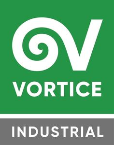

Trade Mark Journal No.2025/017 25 April 2025
WO0000001836456 (11)
Office of origin: Italy
Date of International Registration:17 October 2024
Date of designation in the UK:
17 October 2024

The mark consists of literal and figurative elements. The word “INDUSTRIAL,” in white colour, is inscribed in a grey rectangular figure. Above it, in a green-coloured square geometric figure, there is a stylized white-coloured letter “V”, whose left side is prolonged by wrapping around itself like a spiral. Underneath, there is the inscription “VORTICE” in white color, which in English means "VORTEX".
The mark contains the colours white, grey and green.
Top square background: green; lower rectangle background: grey; words "VORTICE", "INDUSTRIAL" and figurative element: white.
International priority date claimed: 19 April 2024
(Italy)
(302024000066217)
- Class 11
- Air treatment equipment; air heat recovery systems and apparatus; ventilation apparatus and systems; ventilation installations, apparatus and systems; heating installations, apparatus and systems; cooling installations, apparatus and systems; fans [air-conditioning] apparatus and systems; ventilation apparatus and systems; air flow apparatus and systems; air-cooling apparatus and systems; air purification apparatus and systems; air filtration apparatus and systems; air management apparatus and systems; air, smoke and vapour extraction apparatus and systems; air curtains, fans and ventilation systems equipped with lights; heat exchangers, other than parts of machines; heat pumps; heat regenerators; fans [parts of air-conditioning installations]; fans [parts of ventilation systems]; dehumidifiers; humidifiers; infrared lamps; infrared lamp; fan heaters; convector heaters; hand drying appliances and devices; electric hot air hand dryers; touchless hand drying apparatus; hair dryers; electrical hair driers; hand held hair dryers; warm air dryers for use in drying hair; infrared dryers for use in drying hair; disinfectant apparatus.
VORTICE S.P.A.
Representative: GLP S.R.L. - (MILAN OFFICE), Via Victor Hugo 2, I-20123 Milano (MI), ITALY